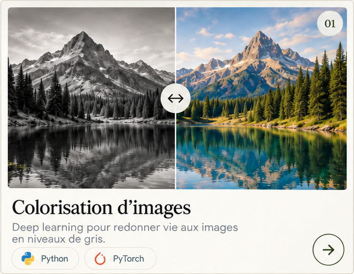
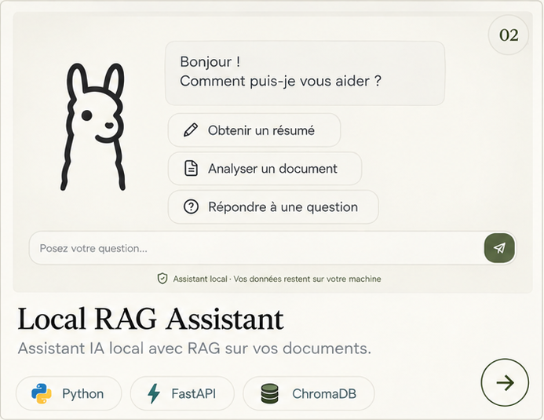
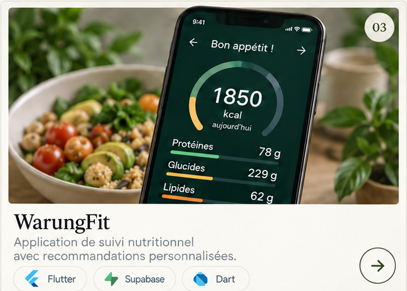
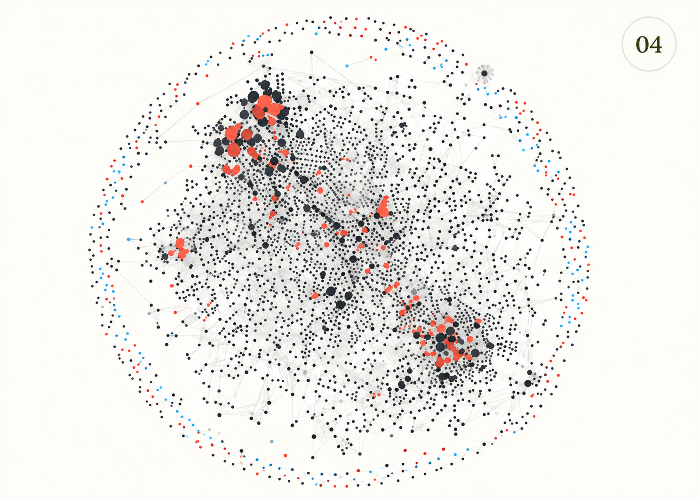

Études de cas
Tous les projets.
Les détails, architectures, vidéos et limites de chaque réalisation.
Explorer

Vision par ordinateurColorisation d’imagesPipeline PyTorch, métriques et limites.
Projet freelance · IA localeLocal RAG AssistantAssistant PDF local développé pour une entreprise.
Application mobileWarungFitEstimation, correction et données protégées.
Système localLocal Second BrainOrganiser mes recherches en notes reliées et consultables.